Android TV · Android · Windows · macOS
All your TV in one app.
Ultra TV is a native IPTV player designed for the remote: channels, movies, series, programme guide, replay and live pause. It tunes itself to your device and network.
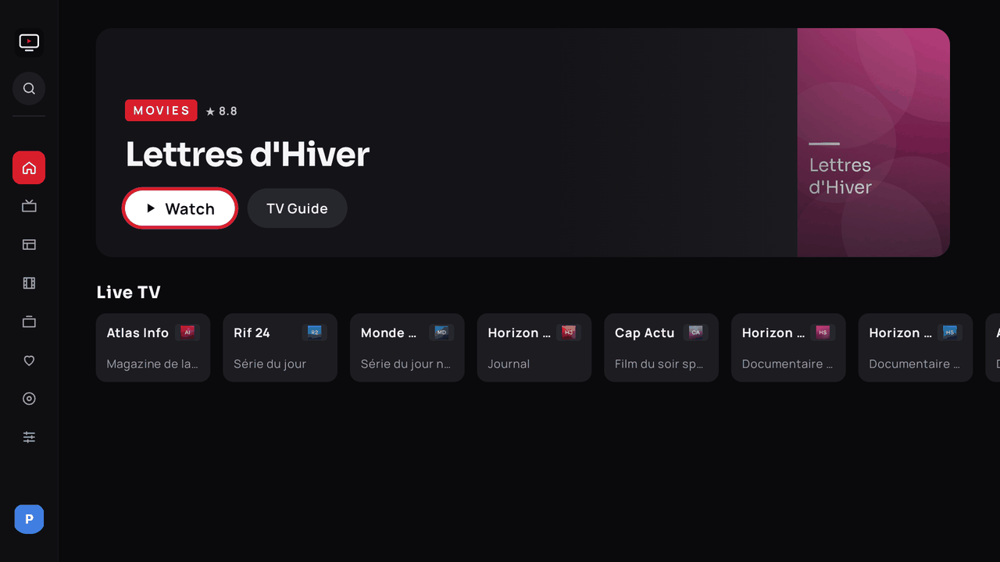
What Ultra TV does
Smooth live TV, even with tens of thousands of channels
Channel list as a side sheet during playback (Channels and Favourites tabs), overlay with recent channels, current programme and the evening ribbon. Active categories, language filter from the first source, quality badges, number zapping, instant search, and Search from any screen (button at the top of the side rail, remote Search and microphone keys).
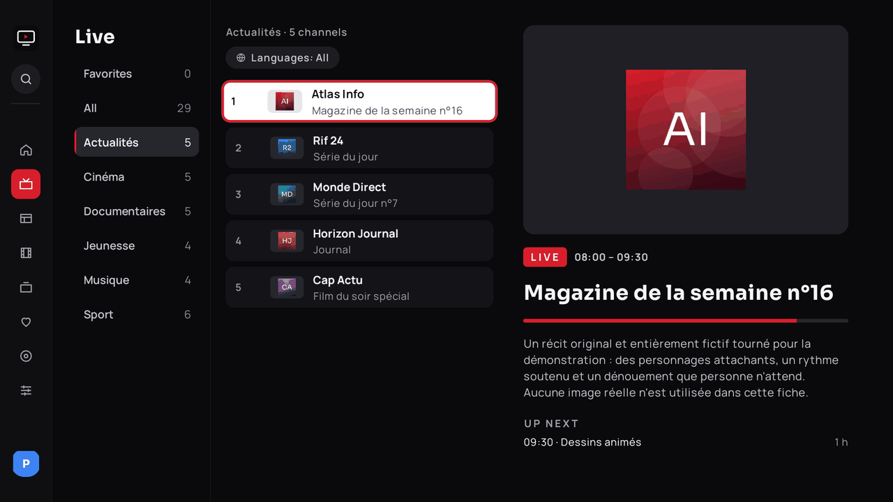
Guide, replay and reminders
Time grid filtered by channel category, channel preview, replay from the guide when the source allows it, scheduled reminders and recordings, live pause through a disk buffer.
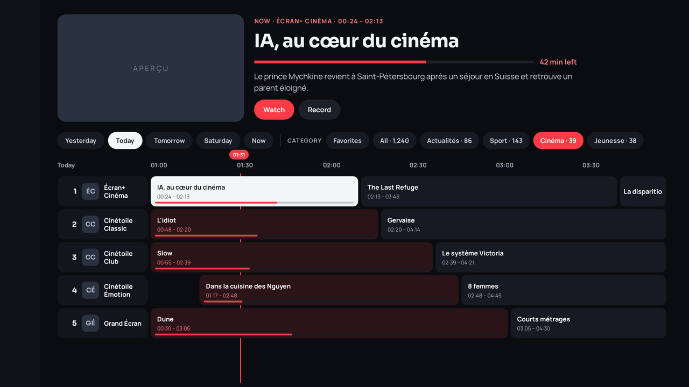
Rich details, subtitles, profiles
Posters, plots, cast and trailers via TMDB, official title logos and HD backdrops via Fanart.tv, next episode of series via TVmaze, IMDb and Rotten Tomatoes ratings, “Skip intro”, online subtitles with adjustable style, profiles including a Kids profile, Google TV integration (Watch Next, voice search).
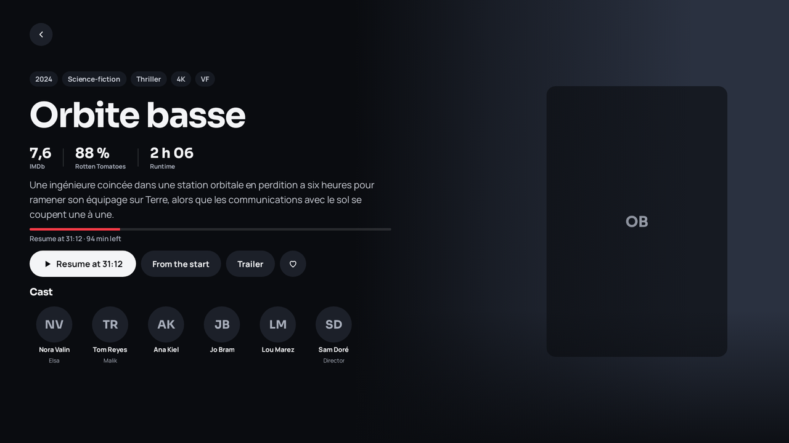
Sport section
Optional: live and upcoming matches over 48 h taken from your sources' guide, by discipline, with reminders, recordings and team badges (TheSportsDB).
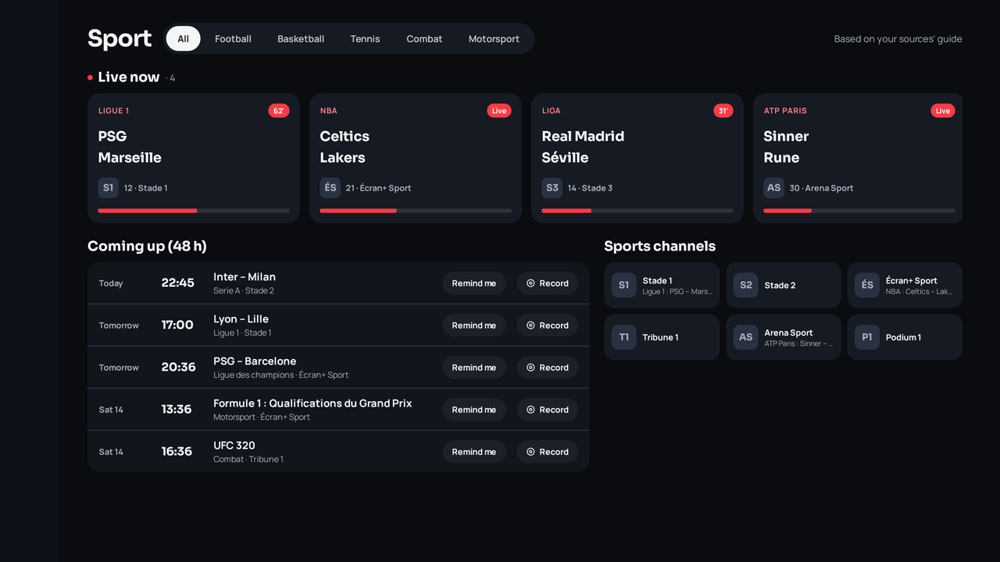
Four languages, including mirrored Arabic
Interface in French, English, Spanish and Arabic (right to left), plus Polish and Brazilian Portuguese (community first drafts), selectable in Settings › Languages, independently of the device language.
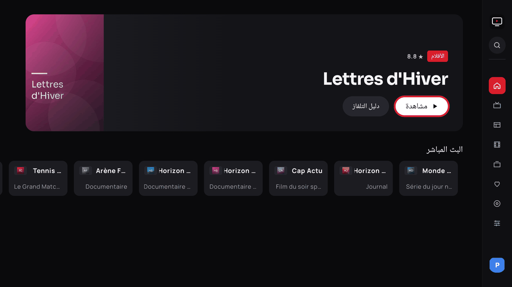
Two playback engines
ExoPlayer (Media3) and VLC, with automatic fallback between engines and decoders when a channel will not start. Buffer, quality and decoding adjust themselves to the box; everything stays configurable.
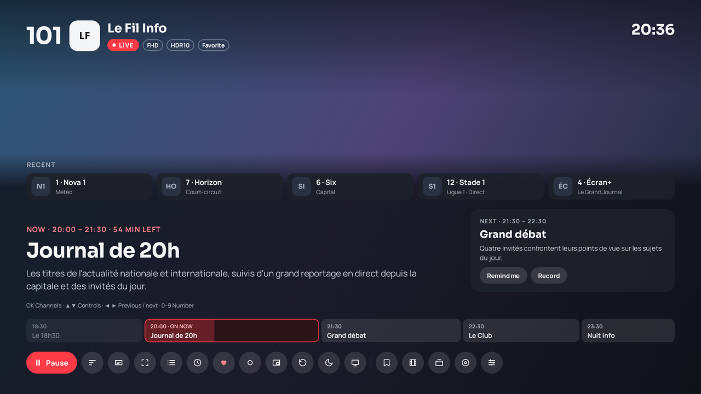
Themes
Dark, light or automatic, redesigned in 1.2.98. The player always stays dark.
Security
Credentials encrypted on the device, no stream address ever shown, cloud pairing by code; a revoked device immediately loses the sources it received from the cloud.
Sleep and comfort
Timer 30 / 60 / 90 min or end of programme, resume playback, built-in updates.
One account, all your screens
Ultra TV runs on TV, smartphone, tablet, Windows and macOS. Same interface, same provider everywhere: add it once in the cloud dashboard and every device receives it.
Android TV and Google TV
The original app, driven by the remote: live TV, guide, replay, live pause, two playback engines, profiles, Watch Next.
Android smartphone
Touch interface: bottom navigation bar, lists and grids by finger, player with gestures and picture-in-picture. Forms sit above the keyboard.
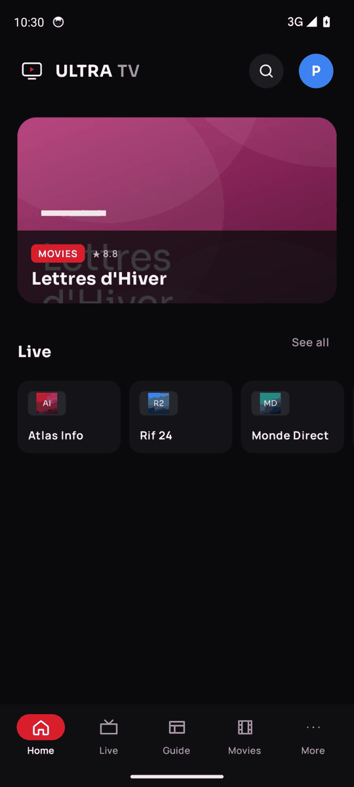
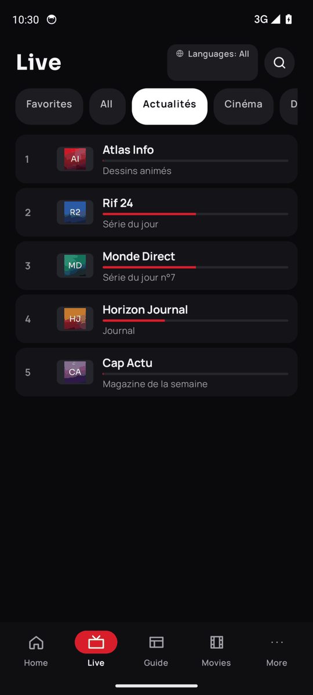
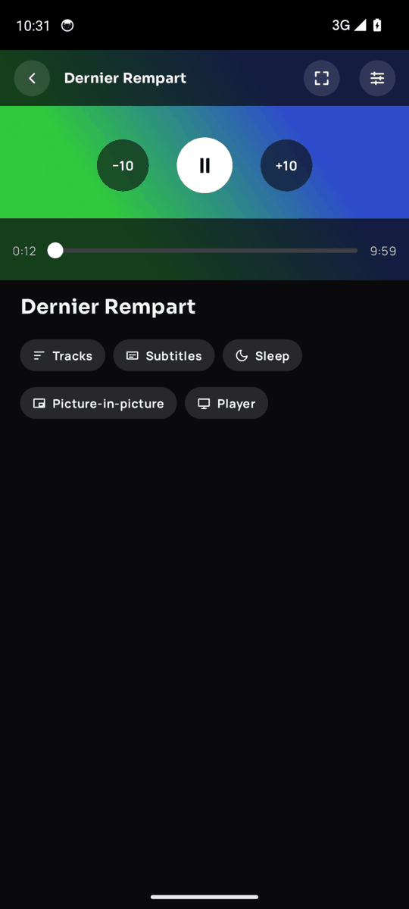
Android tablet
Side rail, list and details side by side: the wide screen is put to work, by touch or keyboard.
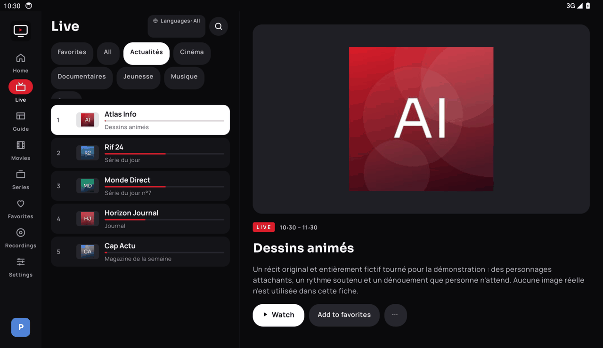
Windows and macOS
The same design on desktop: search under the logo (shortcut Ctrl/Cmd + K or /), direct playback with no proxy, credentials encrypted with the system keychain, automatic updates.
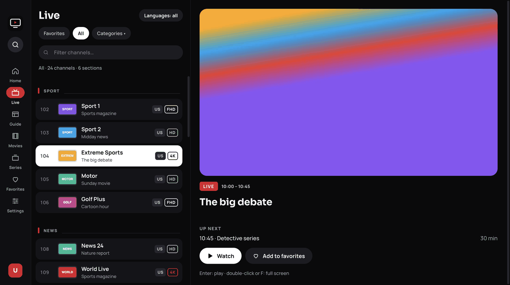
Desktop settings
Sources, cloud, display, playback, sync, languages and profiles.
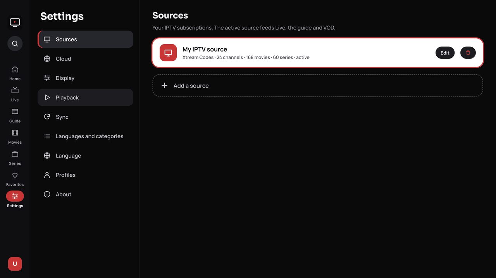
Cloud dashboard
Manage your devices and sources from a browser: tv.weedy.dpdns.org. Pair a device with a code, rename or revoke it.

Source sharing, device by device
A provider added from the dashboard is received by every device. A source added on a device stays private to that device until you share it; recipients are chosen source by source, from the app or the dashboard.
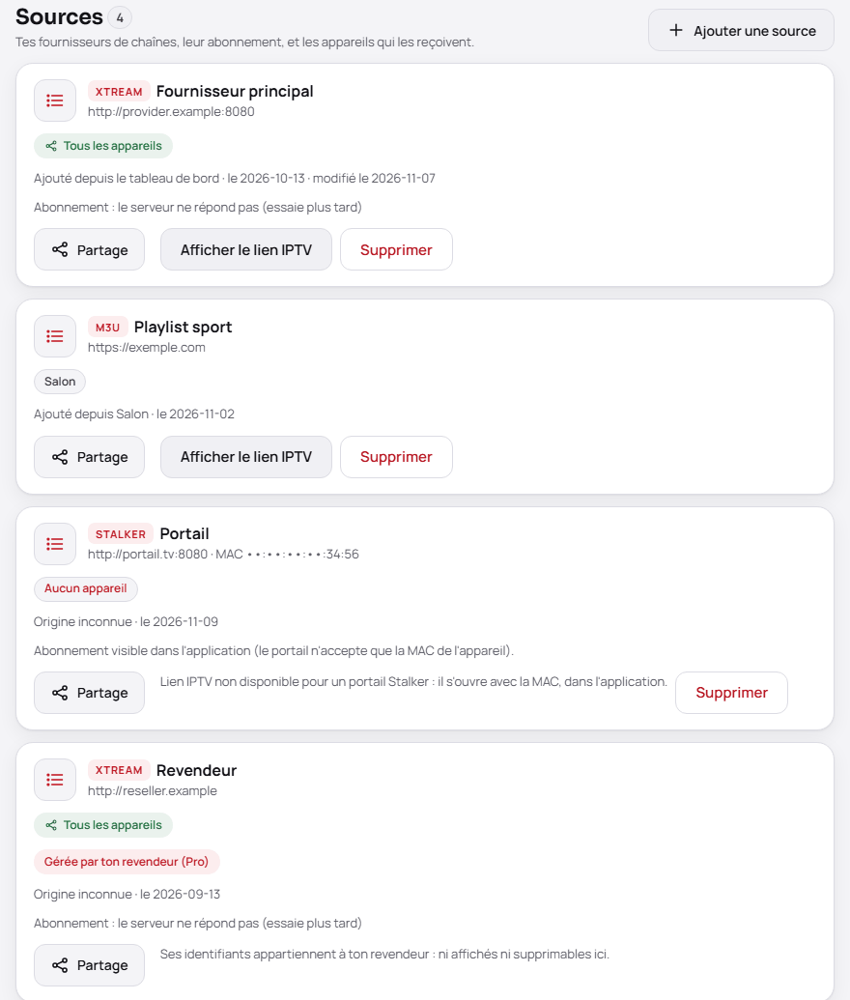
Download
Android 1.2.0
Android 9 or newer (TV, smartphone, tablet). Pick the 64-bit build (arm64) for most recent boxes and phones, the 32-bit build (armv7) for a Chromecast with Google TV HD or an older box, and the universal one if you are not sure. If the install fails, take the 32-bit version.
| Your device | APK |
|---|---|
| Recent Fire TV Stick, Shield, 64-bit boxes and phones | ⬇ arm64 (recommended)…/download/android-arm64 |
| Chromecast with Google TV (HD), older 32-bit boxes | ⬇ 32-bit…/download/android-32 |
| You do not know | ⬇ Universal (last resort)…/download/android-universal |
Windows and macOS
Windows: .exe installer (x64). macOS: .dmg disk image (Apple Silicon and Intel). Published with the desktop-v… releases; automatic updates afterwards.
Downloader
On a box without a browser: open the Downloader app, enter the code and confirm.
5189921
Cannot install?
- Free space: keep at least 500 MB free; the universal APK (227 MB) needs more than the per-CPU APKs.
- Wrong APK: on a 32-bit device (Chromecast with Google TV HD), take the 32-bit APK rather than the universal one.
- Older version signed differently: uninstall the old Ultra TV first (Settings › Apps), then reinstall.
- Truncated download: compare the file size with the release's and its SHA-256 with the published
.sha256file; download again if they differ. - Android 9 minimum.
Install and set up
On the box
- Allow unknown apps for Downloader (Settings › Security).
- Download the APK with the code above, then install it.
- At first launch choose the source type (Xtream Codes, M3U link, M3U file or From the cloud), enter it, then tick your languages: only the matching categories are downloaded.
With adb
adb connect IP_DE_LA_BOX:5555
adb install -r UltraTV.apkCloud sync
To avoid typing credentials with a remote, manage your sources from a browser at tv.weedy.dpdns.org (the address is also shown with a QR code in the app, Settings › Sources).
- Create an account on the dashboard and add your sources.
- Choose “Pair a TV”.
- On the box: “From the cloud” (wizard) or Settings › Sources › Sync from the cloud. Enter the 8-character code shown on the TV into the dashboard.
Your credentials are encrypted on the server side; the box gets its own token, revocable from the dashboard. You can also deploy your own Worker (instructions and secrets to define are in the repository, no value is published).
Support the project
Ultra TV is free and ad-free, and will stay that way. A donation helps pay for the servers (cloud sync, guide, artwork) and the time spent improving it. Card or PayPal, from any country; no card details ever go through Ultra TV.
FAQ
Does Ultra TV include channels?
No. It is a player: you bring your own subscription or playlists, which you are entitled to use.
Are my credentials protected?
They are encrypted on the device, never displayed or logged, and stream addresses are never shown.
Which boxes are supported?
Android 9 and later (API 28): Google TV / Chromecast, Mecool, Fire TV by sideload, Android TV sets. A frugal mode switches on by itself on low-memory devices.
A channel will not start, what now?
Ultra TV tries another decoder, then the other engine, on its own. You can also pick the engine and decoding in the player panel.
How do I update?
The app checks GitHub for new releases and offers to install them.